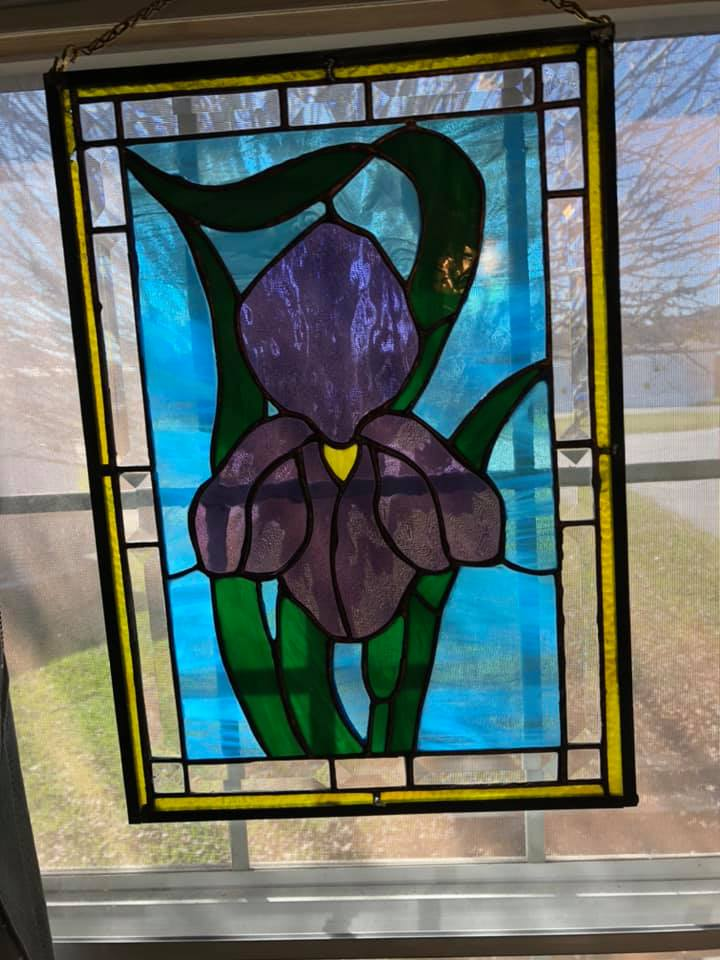

Would like to share my love of stained glass. It is a very rewarding feeling to see a finished piece. I know people think it is expensive to buy but it can be a lasting beauty to have in your home. My prices dont even begin to touch the cost. Just to wake up in the morning and see the sun shining through is a beautiful way to start the day. I welcome any new ideas. Please check out my gallery page or vist my facebook page. Thanks for visiting my website.
Featured Items

$1800 $1000
This featured item survived the hurricane. There are minute stress fractures that can be seen if one looks very closely.



If you see an item that you like, please contact me for pricing and availabilty.
Testimonials
Sandy G.
We had Faye make two pieces of glass and they came out absolutely beautiful. I’m going to have another one made as soon as I can decide what I want in my bathroom window. Thank you so much Faye.
Mike
My name is Mike. I am an outdoorsman. I had Faye make ke a deer, ducks and a bass stained glass to put in my windows
at my house. They are beautiful she does awesome work. I highly recommend her. She is a professional.
Savanah
Colors-n-glass did a AMAZING job on this one of a kind piece! It exceeded all of my expectations. Very please with the work this business did. The detail and the colors make this beautiful ocean scene come to life! The owner is very professional and reliable. 10/10 recommend this business!


Designed by GW Digital Services